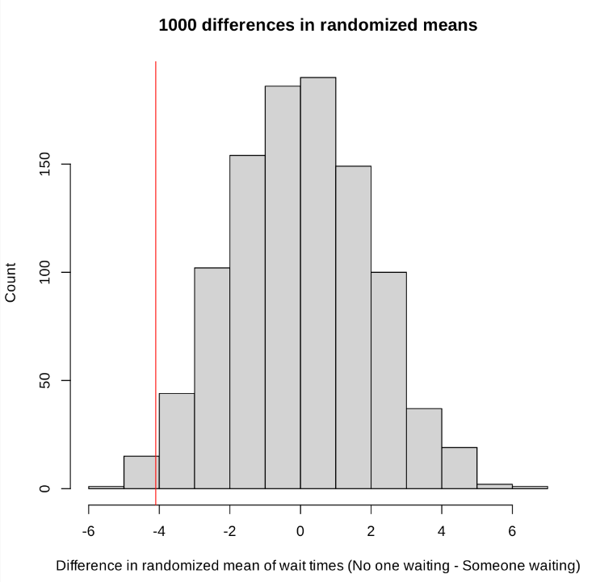

Significant Results
Hypothesis Testing
t-test
- statistic: \(t_{stat} = \frac{\hat{\beta_j} - c}{SE(\hat{\beta_j})}\)
- \(SE(\hat{\beta_j}) = \frac{\hat{\sigma}}{\sqrt{\sum\limits_{i=1}^n (x_i - \bar{x})^2}}\)
- \(\hat{\sigma} = \sqrt{\frac{SSE}{n-2}}\)
- \(H_0\): \(\beta_j = c\)
- \(H_A\): \(\beta_j \neq c\)
\(c \in \mathbb{R}\)
We’ll assume \(c=0\) for most of our purposes, as this is the value that is reported for MLR models created through summary() with an lm().
Used in finding if a feature has an effect on the response. In the case of a small enough p-value, we can reject the null hypothesis in favor of the alternative hypothesis which means there is statistical evidence that the associated feature (variable) has an effect on the response variable.
Partial F-test
Given a full model (\(\Omega\)) and a reduced model (\(\omega\)),
- statistic: \(F_{stat} = \frac{\frac{SSE_{full} - SSE_{reduced}}{p-k}}{\frac{SSE_{full}}{n-p-1}}\)
- \(p\): number of features in the full model
- \(k\): number of features in the reduced model
- \(n\): the total observations in the dataset
- \(H_0\): \(\beta_j = 0\), \(\forall j \notin \omega\) but in \(\Omega\) (the reduced model is sufficient)
- \(H_A\): \(\beta_j \neq 0\) for at least one of \(j \notin \omega\) but in \(\Omega\) (the reduced model is not sufficient)
When there is a small enough p-value, this suggests that the reduced is not sufficient. Used in testing reduced models against full models. This is usually found through anova(reduced_model, full_model) for linear models, and anova(reduced_model, full_model, test = "Chisq") for generalized linear models (which actually turns it into the chi-squared test, as this compares the reduction in deviance between two nested models, i.e. it is analogous to the F-test for linear regression).
Full F-test
- statistic: \(F_{stat} = \frac{\frac{SST - SSE}{p}}{\frac{SSE}{n-p-1}}\)
- \(p = SST_{df} - SSE_{df}\)
- \(n\): number of observations in the dataset
- \(H_0\): \(y_i = \beta_0 + \epsilon_i\) (i.e. \(\beta_1 = \beta_2 = \dots = \beta_p = 0\))
- \(H_A\): \(\beta_k \neq 0\) for at least one value in \(k \in \{1, \dots, p\}\)
The null hypothesis essentially states that there is no useful linear relationship between the response and any of the predictors. A small enough p-value suggests strong evidence against the null hypothesis, or in other words the model is better than the most reduced model possible. Useful in multiple linear regression (MLR) where the individual t-tests have suggesting evidence against the null hypothesis that may result in type I errors.
Shapiro-Wilks Test
- \(H_0\): residuals are normal
- \(H_a\): residuals are not normal
Used for model diagnostics. With an acceptably low p-value, we would reject the null hypothesis indicating there is enough evidence to suggest the residuals are not normal. A “good” model would have a higher p-value, suggesting normal residuals.
Durbin-Watson Test
- \(H_0\): the errors are uncorrelated
- \(H_a\): the errors are correlated (specifically, the residuals exhibit autocorrelation)
Used for model diagnostics. With an acceptably low p-value, we would reject the null hypothesis indicating there is enough evidence to suggest the residuals are correlated. A “good” model would have a higher p-value, suggesting uncorrelated residuals.
Levenes’ Test
- \(H_0\): the variance among groups/categories is equal
- \(H_a\): the variance among groups/categories is not equal
Useful in categorical analysis, and tests for homogeneity of variance.
One-Way ANOVA
- statistic: \(F_{stat} = \frac{SSB/SSB_{df}}{SSW/SSW_{df}} = \frac{\frac{SSB}{I-1}}{\frac{SSW}{N-I}}\)
- \(SSB_{df} = I - 1\)
- \(SSW_{df} = N - I\)
- \(I\): number of groups/categories
- \(N\): total number of data points (across all groups/categories; recall that groups can have different number of data points)
- \(H_0\): \(\mu_A = \mu_B = \mu_c = \dots\) for all groups/categories (i.e. the means of each group are the same)
- \(H_a\): at least one of the groups/categories’ means differ from the rest (i.e. at least one pair of means is not equal, or at least one sample mean is not equal to the other)
Used for testing for different means between categorical tests. With an acceptably low p-value, we would reject the null hypothesis indicating there is enough evidence to suggest there is at least one differing mean between the categories. We need to test further pairwise sets to determine which is individually different.
Important Formulas
SSE (Sum Squared Error) or RSS (Residual Sum of of Squares)
\[SSE = \sum\limits_{i=1}^{n} (y_i - \hat{y_i})^2\]
\(SSE\) is a measure of how much variation is left unexplained by the model, where:
- \(y_i\): actual/observed value
- \(\hat{y_i}\): predicted value
SST (Sum of Squares Total) or TSS (Total Sum of Squares)
\[SST = \sum\limits_{i=1}^{n} (y_i - \bar{y})^2\]
\(SST\) represents the total amount of variation in observed values (what we would get if we used the mean of the data as our model), where:
- \(y_i\): actual/observed value
- \(\bar{y_i}\): mean of the actual/observed values
SSR (Sum of Squared Residuals) or RSS (Residual Sum of Sqaures)
\[SSR = \sum\limits_{i=1}^{n} (\hat{y_i} - \bar{y})^2\]
\(SSR\) gives a sense of how much variation in \(Y\) is explained by our model.
- \(\hat{y_i}\): predicted value
- \(\bar{y_i}\): mean of the actual/observed values
\(R^2\)
\[R^2 = 1 - \frac{SSE}{SST}\]
\(R^2\) is the proportion of variance that can be explained by the model, and can be used as an indicator of goodness of fit for simple linear regression (SLR) models.
\(R^2_a\) (Adjusted \(R^2\))
\[R^2_a = 1 - \frac{SSE/(n-p-1)}{SST/(n-1)}\]
\(R^2_a\) is a better indicator of goodness for multiple linear regression (MLR) models over the normal \(R^2\) as it penalizes for having too many features that are not reducing \(SSE\), where:
- \(n\): number of observations
- \(p\): number of features
MSPE (Mean Squared Prediction Error)
\[MSPE = \frac{1}{n}\sum^n_{i=1} (y_i - \hat{y_i})^2\]
\(MSPE\) quantifies the discrepancy between the predicted values and the observed value, and can help to evalute the performance of a model.
AIC (Akaike Information Criteria)
\[AIC = 2(p+1) - 2\log(\frac{SSE}{n})\]
\(AIC\) estimates the relative amount of information that is lost by a given model in effort to minimize the information that’s lost.
BIC (Bayesian Information Criteria)
\[BIC = (p+1)log(n) - 2logL(\hat{\beta})\]
\(BIC\) is similar estimate to \(AIC\) with slightly different parameters, where
- \(logL(\hat{\beta})\) is the log likelihood function
One-Way ANOVA Equations
SST
\(SST = \sum\limits_{i=1}^{I} \sum\limits_{j=1}^{n_i} (y_{ij} - \bar{\bar{y}})^2\)
- \(i \in {1, \dots, I}\): group/category
- \(j \in {1, \dots, n_i}\) value within group/category
- \(SST = SSW + SSB\)
SSW (Within-Group Sum of Squares)
\(SSW = \sum\limits_{i=1}^{I} \sum\limits_{j=1}^{n_i} (y_{ij} - \bar{y_i})^2\)
How much groups are split from their own mean.
SSB (Between-Group Sum of Squares)
\(SSB = \sum\limits_{i=1}^{I} \sum\limits_{j=1}^{n_i} (\bar{y_i} - \bar{\bar{y}})^2\)
How much groups are split from the total mean.
Selected Questions
Question 1
Explain why, in MLR, conducting multipe t-tests for regression parameters, \(\beta_j\), is problematic and descrbie one solution to this problem.
Answer 1
Conducting multiple t-tests for regression parameters in MLR is problematic because the more features the more likely you are to commit a Type I error. The probability of committing a single Type I error in a MLR model with just 10 features is about 40%. This is overall problematic because a feature could be shown as being statistically significant to having an effect on the response variable, when it actually isn’t. One solution to this problem is to use a simultaneous test, the F-test.
Question 2
Explain (in general) how to compute a percentile bootstrap interval for a proportion.
Answer 2
- Resample, with replacement, the original sample many times, having the resample be the same size as the same.
- Compute the desired statistic for each resample. In the case it will be a proportion.
- Let a be the probability of a type I error (i.e. alpha) such that significance level is (100 - a)%.
Then, in the distribution find the corresponding percentiles for [a/2, (100 - a/2)].
That will be your percentile bootstrap interval for a proportion.
Question 3
Suppose we want to test the hypothesis that the slope coefficient \(\beta_1\) is less than 1 (for a linear regression model). State the appropriate null and alternative hypothesis below
Answer 3
- \(H_0\): \(\beta_1 \geq 0\)
- \(H_a\): \(\beta_1 < 0\)
Here, we see a deviation from past material. The null hypothesis will always contain an equality symbol, however it can be an inequality.
Question 4
Conduct the above hypothesis test.
Answer 4
\(t_{stat} = \frac{\hat{B_j} - \beta_j}{SE(\hat{\beta_j})}\)
- calculate test statistic (t-stat)
- find rejection region critical value (t-crit)
- compare t-stat and t-crit
Recall our rejection regions for a given hypothesis test:
- \(H_a\): \(\theta > \theta_0 \rightarrow test_{stat} \geq rejection_{crit}\)
- \(H_a\): \(\theta < \theta_0 \rightarrow test_{stat} \leq rejection_{crit}\)
- \(H_a\): \(\theta \neq \theta_0 \rightarrow test_{stat} \geq rejection_{crit}\) OR \(test_{stat} \leq rejection_{crit}\)
So, in our case, we want to know if \(t_{stat} \leq t_{crit}\). If it is, we have enough evidence to reject the null hypothesis.
Question 5
Suppose you have data for the time in second it takes someone to leave their parking spot given the fact that someone is waiting or not.
- What is the mean time to vacate a parking spot when no one is waiting?
- What is the mean time to vacate a parking spot when someone is waiting?
- What is the difference in means? (Not Waiting - Waiting)
- If we were to run a hypothesis test with randomization, what is the test setup?
- Run the test and interpret the result.
Answer 5
Mean Time to Vacate When Not Waiting
Code
mean(not_waiting)[1] 27.94Mean Time to Vacate When Waiting
Code
mean(waiting)[1] 31.99Difference in Means
Hypothesis Test with Randomization
Recall we want to make our null hypothesis the status quo (i.e. we would assume that there is no difference for this case).
- \(H_0\): \(\mu_{not waiting} = \mu_{waiting}\), the difference in mean wait time is 0
-
\(H_a\): \(\mu_{waiting} > \mu_{not waiting}\)
- \(\mu_{waiting} - \mu_{not waiting} > 0\)
- \(\mu_{not waiting} - \mu_{waiting} < 0\)
Perform the Test
Distribution generated with 40 wait times, distributed into two size 20 groups. The test statistic is marked with a vertical red line.

Since there were 1000 differences used to create this histogram, using our standard critical value of \(\alpha = 0.05\), this would put our critical value for the rejection at \(50\). We can approximate that the counts on the histogram are under \(25\), thus giving us \(p-value < \frac{25}{1000} = 0.025\), we can reject the null hypothesis in favor of the alternative hypothesis. There is evidence that the mean wait time when no one is waiting is less than the mean wait time when someone is waiting.
Question 6
We found that the OLS estimator for \(\beta\) in MLR is given by \(\hat{\beta} = (X^TX)^{-1}X^TY\).
- What condition must be true about the column of \(X\) for the matrix \(X^TX\) to be invertible?
- How do you diagnose multicollinearity or non-identifiability?
Answer 6
True Condition
The columns of \(X\) must be linearly independent. The inverse does not exist when the columns of \(X\) are linearly dependent.
Diagnosing Multicollinearity
We can diagnose multicollinearity or non-identifiability several ways.
Theoretically, if we find linear dependence using linear algebra, then we can notice it that way.
Programmatically, if there is direct linear dependence, then after building a model and preparing a summary, we’ll find NAs within the feature row.
However, true direct linear dependence is VERY rare. Instead, “near” non-identifiability can be recognized (will take more investigation after it is suspected) if there is a “fishy” regression coefficient. For instance, if you know that a coefficient should be positive (good theoretical reasons), but is showing as negative, this could be a sign of multicollinearity.
Question 7
Given a one-way ANOVA test, suppose \(F_{crit} = 3.006\) with \(\alpha = 0.1\), perform a rejection region test provided we know that \(F_{stat} = 6.55 \rightarrow p.value = 0.02\)
Answer 7
\(0.02 < 0.1\), thus we reject the null hypothesis.
Question 8
Smoothing splines will always go through each data.
Answer 8
False, going through every data point is an overfit.
Question 9
Binomial Regression is a type of nonparametric model.
Answer 9
False, nonparametric models include kernel regression and GAMs.
Question 10
\(Y = f(x_1, x_2, x_3) = \beta_0 + \beta_1x_1 + e^{x_2} + sin(\pi x_3) + \epsilon\) is an example of an additive model.
Answer 10
True, however, something like \(Y = f(x_1, x_2, x_3) = \beta_0 + \beta_1x_1 + e^{x_2 * x_3} + sin(\pi x_3) + \epsilon\) is not an additive model. The term \(e^{x_2 * x_3}\) violates the idea of additivity.
Question 11
Suppose we have a Poisson model which explains the number of awards earned by students at a high school in a year based on:
- math final exam score
- type of program they are enrolled in, where the categories are:
- “Remedial”
- “Standard”
- “Honors”
glm(formula = num_awards ~ prog + math, family = "poisson", data = p)
Coefficients:
| Estimate | Std. Error | z value | P(> | |
|---|---|---|---|---|
| (Intercept) | -5.2471 | 0.6585 | -7.97 | 1.6e-15*** |
| progStandard | 1.0839 | 0.3583 | 3.03 | 0.0025** |
| progHonors | 0.3698 | 0.4411 | 0.84 | 0.4018 |
| math | 0.0702 | 0.0106 | 6.62 | 3.6e-11*** |
What is the expected number of awards for a student who is in the honors program and who’s math final exam is set to the mean of the value of the sample: \(math = 53\). Round to the nearest hundredths place.
Answer 11
\(log(\hat{Y}) = \hat{\beta_0} + \hat{\beta_1}x_1 + \hat{\beta_2}x_2 + \hat{\beta_3}x_3\)
\(= -5.2471 + 1.0839 progStandard + 0.3698 progHonors + 0.0702 math\)
\(= -5.2471 + 0.3698 + 0.0702*53\)
\(= -1.1567\)
\(log(\hat{Y}) = -1.1567 \rightarrow \hat{Y} = e^{-1.1567} \approx 0.31\)